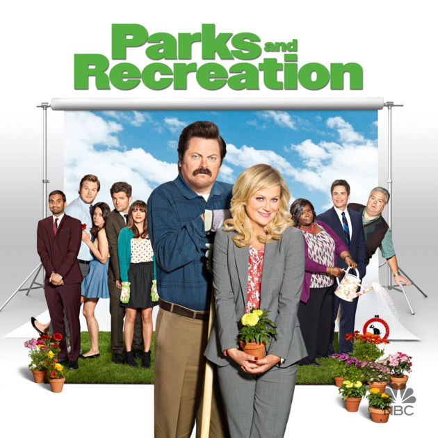
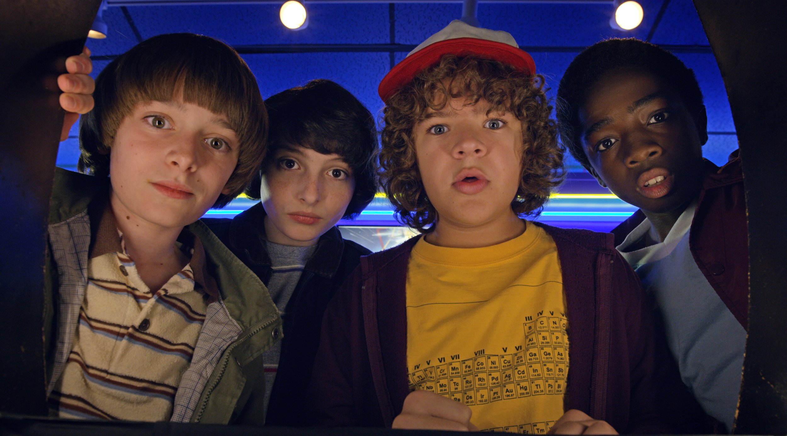

Taryn Frank
About Me
I was born in Saratoga, California.
My favorite food is sushi.
My Favorite Websites
Youtube
Gmail
Facebook
Instagram
Buzzfeed
My Favorite TV Shows
Gilmore Girls
Parks and Recs

Stranger Things

My Favorite Pictures